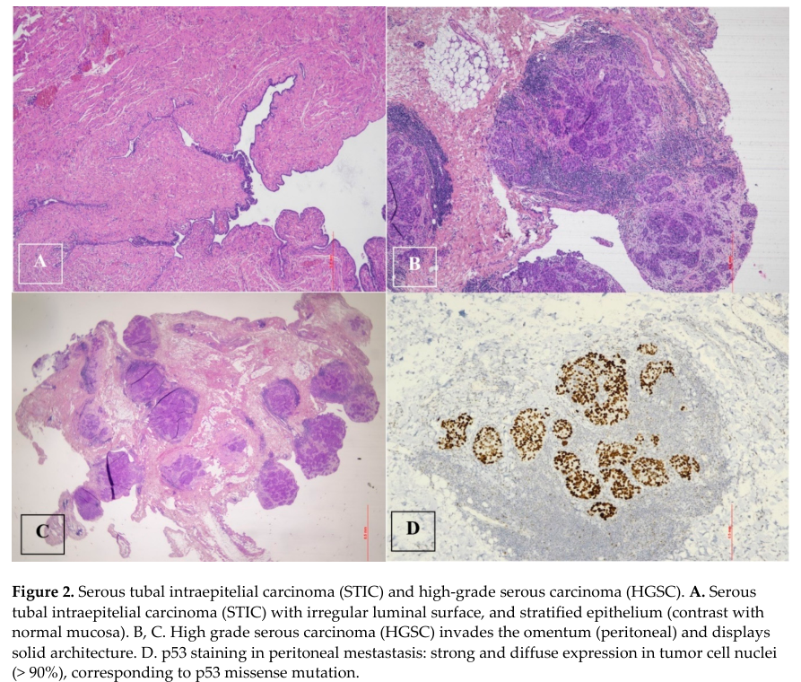

Fallopian tube cancer is a malignant neoplasm of the fallopian tube. The dominant histology is high-grade serous carcinoma, and accumulating pathological and molecular evidence has reframed the fallopian tube as the site of origin for the majority of so-called "ovarian" high-grade serous carcinomas. The recognized precursor lesion is serous tubal intraepithelial carcinoma (STIC), a non-invasive intraepithelial malignancy of the distal (fimbrial) tubal epithelium characterized by near-universal TP53 mutation. Fallopian tube, ovarian, and primary peritoneal high-grade serous carcinomas are now treated as a single clinicopathological entity (tubo-ovarian high-grade serous carcinoma). The disease is strongly associated with germline BRCA1/BRCA2 mutations, and risk-reducing salpingo-oophorectomy in BRCA carriers frequently reveals occult STIC or early carcinoma in the fimbria. See also the related entry Ovarian High-Grade Serous Carcinoma, which models the shared tubo-ovarian serous carcinoma mechanism in greater depth.
Ask a research question about Fallopian Tube Cancer. OpenScientist will conduct autonomous deep research using the Disorder Mechanisms Knowledge Base and PubMed literature (typically 10-30 minutes).
Do not include personal health information in your question. Questions and results are cached in your browser's local storage.
name: Fallopian Tube Cancer
creation_date: "2026-06-08T17:13:53Z"
category: Complex
disease_term:
preferred_term: fallopian tube cancer
term:
id: MONDO:0002158
label: fallopian tube cancer
parents:
- Female Reproductive Organ Cancer
synonyms:
- Tubal carcinoma
- Carcinoma of the fallopian tube
- Primary fallopian tube carcinoma
description: >-
Fallopian tube cancer is a malignant neoplasm of the fallopian tube. The
dominant histology is high-grade serous carcinoma, and accumulating
pathological and molecular evidence has reframed the fallopian tube as the
site of origin for the majority of so-called "ovarian" high-grade serous
carcinomas. The recognized precursor lesion is serous tubal intraepithelial
carcinoma (STIC), a non-invasive intraepithelial malignancy of the distal
(fimbrial) tubal epithelium characterized by near-universal TP53 mutation.
Fallopian tube, ovarian, and primary peritoneal high-grade serous carcinomas
are now treated as a single clinicopathological entity (tubo-ovarian
high-grade serous carcinoma). The disease is strongly associated with
germline BRCA1/BRCA2 mutations, and risk-reducing salpingo-oophorectomy in
BRCA carriers frequently reveals occult STIC or early carcinoma in the
fimbria. See also the related entry Ovarian High-Grade Serous Carcinoma,
which models the shared tubo-ovarian serous carcinoma mechanism in greater
depth.
has_subtypes:
- name: HGSC
display_name: High-Grade Serous Carcinoma
description: >-
The most common and clinically dominant subtype of fallopian tube cancer.
Characterized by near-universal TP53 mutation, frequent homologous
recombination deficiency (germline/somatic BRCA1/2 mutation, BRCA promoter
methylation), and high genomic instability with widespread copy-number
aberration. Arises in the distal fimbrial epithelium from the STIC
precursor and disseminates early to the peritoneum.
- name: STIC
display_name: Serous Tubal Intraepithelial Carcinoma
description: >-
The non-invasive precursor lesion of tubo-ovarian high-grade serous
carcinoma, localized to the secretory epithelial cells of the distal
(fimbrial) fallopian tube. Defined by a p53 immunohistochemical signature
(diffuse strong staining or null pattern reflecting TP53 mutation) together
with elevated Ki-67 proliferation and loss of polarity. STIC is most often
identified incidentally in risk-reducing salpingo-oophorectomy specimens
from BRCA1/2 carriers.
evidence:
- reference: PMID:39594243
reference_title: "Serous Tubal Intraepithelial Carcinoma (STIC): A Review of the Literature on the Incidence at the Time of Prophylactic Surgery."
supports: SUPPORT
evidence_source: HUMAN_CLINICAL
snippet: "STIC is considered a precursor to many HGSC cases, originating in the fallopian tubes."
explanation: Establishes STIC as the precursor lesion of high-grade serous carcinoma arising in the fallopian tube.
- reference: PMID:35871032
reference_title: "Risk reducing surgery with peritoneal staging in BRCA1-2 mutation carriers. A prospective study."
supports: SUPPORT
evidence_source: HUMAN_CLINICAL
snippet: "6 (4.5%) occult carcinomas were diagnosed: 3 fallopian tube carcinomas, one ovarian carcinoma and two serous tubal intraepithelial carcinomas (STICs)"
explanation: Prospective RRSO cohort in BRCA carriers found occult fallopian tube carcinomas and STIC lesions, supporting STIC as an incidentally-identified precursor.
pathophysiology:
- name: TP53 Mutation in Tubal Secretory Cells
description: >-
Near-universal somatic TP53 mutation in secretory epithelial cells of the
distal fallopian tube is the earliest and defining molecular event,
producing the "p53 signature" in morphologically benign epithelium that is
the precursor of STIC.
cell_types:
- preferred_term: fallopian tube secretory epithelial cell
term:
id: CL:4030006
label: fallopian tube secretory epithelial cell
locations:
- preferred_term: fimbria of fallopian tube
term:
id: UBERON:8410010
label: fimbria of fallopian tube
evidence:
- reference: PMID:38956451
reference_title: "The genomic trajectory of ovarian high-grade serous carcinoma can be observed in STIC lesions."
supports: SUPPORT
evidence_source: HUMAN_CLINICAL
snippet: "Ovarian high-grade serous carcinoma (HGSC) originates in the fallopian tube, with secretory cells carrying a TP53 mutation, known as p53 signatures, identified as potential precursors."
explanation: Identifies TP53-mutant fallopian tube secretory cells (p53 signatures) as the earliest precursors of high-grade serous carcinoma.
downstream:
- target: STIC Precursor Formation
description: TP53-mutant secretory cells acquire a proliferative intraepithelial phenotype.
- name: STIC Precursor Formation
description: >-
TP53-mutant secretory cells in the fimbria expand into serous tubal
intraepithelial carcinoma, a non-invasive intraepithelial malignancy with a
p53 immunostaining signature and elevated proliferation, recognized as the
direct precursor of high-grade serous carcinoma.
cell_types:
- preferred_term: fallopian tube secretory epithelial cell
term:
id: CL:4030006
label: fallopian tube secretory epithelial cell
locations:
- preferred_term: fimbria of fallopian tube
term:
id: UBERON:8410010
label: fimbria of fallopian tube
evidence:
- reference: PMID:38956451
reference_title: "The genomic trajectory of ovarian high-grade serous carcinoma can be observed in STIC lesions."
supports: SUPPORT
evidence_source: HUMAN_CLINICAL
snippet: "p53 signatures evolve into serous tubal intraepithelial carcinoma (STIC) lesions, which in turn progress into invasive HGSC"
explanation: Documents the p53 signature to STIC to invasive carcinoma progression sequence.
downstream:
- target: Homologous Recombination Deficiency
description: STIC lesions accumulate further genomic instability, often via HRR defects.
- name: Homologous Recombination Deficiency
conforms_to: "dna_repair_synthetic_lethality#HRR or FA/BRCA Repair Deficiency"
description: >-
Loss of homologous recombination repair, most often through germline or
somatic BRCA1/BRCA2 mutation or BRCA1 promoter methylation, drives genomic
instability, widespread copy-number alteration, and platinum/PARP-inhibitor
sensitivity in high-grade serous carcinoma.
genes:
- preferred_term: BRCA1
term:
id: hgnc:1100
label: BRCA1
- preferred_term: BRCA2
term:
id: hgnc:1101
label: BRCA2
biological_processes:
- preferred_term: double-strand break repair via homologous recombination
modifier: DECREASED
term:
id: GO:0000724
label: double-strand break repair via homologous recombination
evidence:
- reference: PMID:21720365
reference_title: "Integrated genomic analyses of ovarian carcinoma."
supports: SUPPORT
evidence_source: HUMAN_CLINICAL
snippet: >-
Pathway analyses suggested that homologous recombination is defective in about half
of the tumours analysed
explanation: >-
TCGA analysis of high-grade serous carcinoma establishes homologous recombination
deficiency as a central mechanism in roughly half of tumors, underpinning genomic
instability and platinum/PARP sensitivity in tubo-ovarian HGSC.
downstream:
- target: Invasive High-Grade Serous Carcinoma and Peritoneal Spread
description: Genomic instability promotes invasion and early transcoelomic dissemination.
- name: Invasive High-Grade Serous Carcinoma and Peritoneal Spread
description: >-
Invasive high-grade serous carcinoma sheds from the fimbria and
disseminates transcoelomically across the peritoneal cavity and omentum,
producing the advanced-stage presentation typical of tubo-ovarian
high-grade serous carcinoma.
cell_types:
- preferred_term: fallopian tube secretory epithelial cell
term:
id: CL:4030006
label: fallopian tube secretory epithelial cell
evidence:
- reference: PMID:38956451
reference_title: "The genomic trajectory of ovarian high-grade serous carcinoma can be observed in STIC lesions."
supports: SUPPORT
evidence_source: HUMAN_CLINICAL
snippet: "which in turn progress into invasive HGSC, which readily spreads to the ovary and disseminates around the peritoneal cavity"
explanation: Documents that STIC lesions progress to invasive high-grade serous carcinoma that disseminates across the peritoneal cavity, the defining feature of advanced-stage tubo-ovarian HGSC.
phenotypes:
- name: Pelvic mass
description: A pelvic or adnexal mass is a common presenting finding.
phenotype_term:
preferred_term: Pelvic mass
term:
id: HP:0031501
label: Pelvic mass
- name: Ascites
description: Malignant ascites from peritoneal dissemination is common at advanced stage.
phenotype_term:
preferred_term: Ascites
term:
id: HP:0001541
label: Ascites
- name: Abnormal vaginal bleeding
description: Abnormal vaginal bleeding or watery discharge can be a presenting symptom.
phenotype_term:
preferred_term: Abnormal vaginal bleeding
term:
id: HP:0034263
label: Abnormal vaginal bleeding
- name: Abdominal distention
description: Abdominal distention from ascites or bulky disease is common at advanced stage.
phenotype_term:
preferred_term: Abdominal distention
term:
id: HP:0003270
label: Abdominal distention
- name: Pelvic pain
description: >-
Pelvic or lower abdominal pain is a common nonspecific presenting symptom and
a component of the classic Latzko triad (watery vaginal discharge, colicky
lower abdominal pain, and a pelvic mass).
phenotype_term:
preferred_term: Pelvic pain
term:
id: HP:0034267
label: Pelvic pain
evidence:
- reference: PMID:23730659
reference_title: "Bilateral primary fallopian tube carcinoma with the classical clinical features: a case report."
supports: SUPPORT
evidence_source: HUMAN_CLINICAL
snippet: "The Latzko's triad of a watery vaginal discharge, a colicky lower abdominal pain and a pelvic mass is typical of a fallopian tube carcinoma"
explanation: The Latzko triad of fallopian tube carcinoma includes colicky lower abdominal/pelvic pain as a typical presenting feature.
- name: Abnormal vaginal discharge
description: >-
Watery vaginal discharge (hydrops tubae profluens) is a classic, though
uncommon, presenting symptom and a component of the Latzko triad.
phenotype_term:
preferred_term: Abnormal vaginal discharge
term:
id: HP:0034269
label: Abnormal vaginal discharge
evidence:
- reference: PMID:23730659
reference_title: "Bilateral primary fallopian tube carcinoma with the classical clinical features: a case report."
supports: SUPPORT
evidence_source: HUMAN_CLINICAL
snippet: "The Latzko's triad of a watery vaginal discharge, a colicky lower abdominal pain and a pelvic mass is typical of a fallopian tube carcinoma"
explanation: Watery vaginal discharge is a typical (Latzko triad) presenting symptom of fallopian tube carcinoma.
histopathology:
- name: Serous Tubal Intraepithelial Carcinoma
finding_term:
preferred_term: Serous Tubal Intraepithelial Carcinoma
term:
id: NCIT:C126449
label: Serous Tubal Intraepithelial Carcinoma
diagnostic: true
description: >-
Non-invasive intraepithelial malignancy of the distal fimbrial tubal
epithelium, diagnosed on the basis of aberrant p53 and Ki-67
immunohistochemistry together with architectural and nuclear atypia, using
the Sectioning and Extensively Examining the Fimbriated End (SEE-FIM)
protocol. Recognized as the precursor of invasive high-grade serous
carcinoma.
evidence:
- reference: PMID:37775701
reference_title: "Fallopian tube lesions as potential precursors of early ovarian cancer: a comprehensive proteomic analysis."
supports: SUPPORT
evidence_source: HUMAN_CLINICAL
snippet: "Three main lesions, p53 signatures, STILs, and STICs, have been defined based on the immunohistochemistry (IHC) pattern of p53 and Ki67 markers"
explanation: Defines STIC and its precursors by p53/Ki-67 immunohistochemistry, supporting the diagnostic histopathologic criteria.
genetic:
- name: BRCA1
gene_term:
preferred_term: BRCA1
term:
id: hgnc:1100
label: BRCA1
association: Germline Pathogenic Variants
inheritance:
- name: Autosomal Dominant
notes: >-
Germline pathogenic BRCA1 variants substantially increase fallopian tube /
tubo-ovarian high-grade serous carcinoma risk and are a primary indication
for risk-reducing salpingo-oophorectomy.
evidence:
- reference: PMID:30345884
reference_title: "Maintenance Olaparib in Patients with Newly Diagnosed Advanced Ovarian Cancer."
supports: SUPPORT
evidence_source: HUMAN_CLINICAL
snippet: "high-grade serous or endometrioid ovarian cancer, primary peritoneal cancer, or fallopian-tube cancer (or a combination thereof) with a mutation in BRCA1, BRCA2, or both"
explanation: The SOLO-1 phase 3 trial explicitly enrolled fallopian-tube cancer patients carrying BRCA1 (or BRCA2) mutations, supporting germline BRCA1 mutation as a clinically actionable driver of this disease.
- name: BRCA2
gene_term:
preferred_term: BRCA2
term:
id: hgnc:1101
label: BRCA2
association: Germline Pathogenic Variants
inheritance:
- name: Autosomal Dominant
notes: >-
Germline pathogenic BRCA2 variants increase tubo-ovarian high-grade serous
carcinoma risk and confer homologous recombination deficiency that
sensitizes tumors to platinum and PARP inhibitors.
evidence:
- reference: PMID:30345884
reference_title: "Maintenance Olaparib in Patients with Newly Diagnosed Advanced Ovarian Cancer."
supports: SUPPORT
evidence_source: HUMAN_CLINICAL
snippet: "high-grade serous or endometrioid ovarian cancer, primary peritoneal cancer, or fallopian-tube cancer (or a combination thereof) with a mutation in BRCA1, BRCA2, or both"
explanation: The SOLO-1 phase 3 trial explicitly enrolled fallopian-tube cancer patients with BRCA1/2 mutations, supporting BRCA1/2 mutation as a clinically actionable driver in this disease.
- name: TP53
gene_term:
preferred_term: TP53
term:
id: hgnc:11998
label: TP53
association: Somatic Loss-of-Function Mutations
notes: >-
Somatic TP53 mutation is near-universal in high-grade serous carcinoma and
its STIC precursor, producing the diagnostic p53 immunohistochemical
signature.
treatments:
- name: Cytoreductive Surgery
description: >-
Surgical staging and maximal cytoreduction (debulking), typically including
bilateral salpingo-oophorectomy, hysterectomy, and omentectomy.
treatment_term:
preferred_term: surgical procedure
term:
id: MAXO:0000004
label: surgical procedure
evidence:
- reference: PMID:30345884
reference_title: "Maintenance Olaparib in Patients with Newly Diagnosed Advanced Ovarian Cancer."
supports: SUPPORT
evidence_source: HUMAN_CLINICAL
snippet: "standard treatment with surgery and platinum-based"
explanation: Surgery is part of the standard first-line treatment for advanced tubo-ovarian/fallopian-tube high-grade serous carcinoma.
- name: Platinum-Taxane Chemotherapy
description: >-
Carboplatin plus paclitaxel is the standard first-line chemotherapy for
advanced tubo-ovarian high-grade serous carcinoma.
treatment_term:
preferred_term: chemotherapy
term:
id: MAXO:0000647
label: chemotherapy
therapeutic_agent:
- preferred_term: carboplatin
term:
id: CHEBI:31355
label: carboplatin
- preferred_term: paclitaxel
term:
id: CHEBI:45863
label: paclitaxel
evidence:
- reference: PMID:30345884
reference_title: "Maintenance Olaparib in Patients with Newly Diagnosed Advanced Ovarian Cancer."
supports: SUPPORT
evidence_source: HUMAN_CLINICAL
snippet: "standard treatment with surgery and platinum-based"
explanation: Platinum-based chemotherapy is part of the standard first-line treatment for advanced tubo-ovarian/fallopian-tube high-grade serous carcinoma.
- name: PARP Inhibitor Maintenance
description: >-
PARP inhibitors (e.g., olaparib, niraparib) provide maintenance benefit,
especially in BRCA-mutant / homologous-recombination-deficient disease,
exploiting synthetic lethality with HRR deficiency.
therapeutic_modality: SMALL_MOLECULE
treatment_term:
preferred_term: Pharmacotherapy
term:
id: NCIT:C15986
label: Pharmacotherapy
therapeutic_agent:
- preferred_term: olaparib
term:
id: CHEBI:83766
label: olaparib
evidence:
- reference: PMID:30345884
reference_title: "Maintenance Olaparib in Patients with Newly Diagnosed Advanced Ovarian Cancer."
supports: SUPPORT
evidence_source: HUMAN_CLINICAL
snippet: "the risk of disease progression or death was 70% lower with olaparib than with placebo"
explanation: The SOLO-1 trial demonstrated substantial progression-free survival benefit from PARP inhibitor maintenance in BRCA1/2-mutated advanced ovarian/fallopian-tube/peritoneal cancer.
- name: Risk-Reducing Salpingo-Oophorectomy
description: >-
Prophylactic bilateral salpingo-oophorectomy in BRCA1/2 carriers
substantially reduces the risk of tubo-ovarian/fallopian tube high-grade
serous carcinoma and is the standard risk-reducing surgery; it frequently
reveals occult STIC or early tubal carcinoma. The tubal-origin model has
motivated alternative risk-reducing salpingectomy with delayed oophorectomy
to defer premature menopause.
treatment_term:
preferred_term: salpingo-oophorectomy
term:
id: NCIT:C15323
label: Salpingo-Oophorectomy
evidence:
- reference: PMID:38907139
reference_title: "Risk-reducing salpingectomy with delayed oophorectomy to prevent ovarian cancer in women with an increased inherited risk: insights into an alternative strategy."
supports: SUPPORT
evidence_source: HUMAN_CLINICAL
snippet: "which decreases their EOC risk by 96% when performed within guideline"
explanation: A risk-reducing salpingo-oophorectomy reduces epithelial ovarian/tubal cancer risk by 96% when performed within guideline ages.
- reference: PMID:38907139
reference_title: "Risk-reducing salpingectomy with delayed oophorectomy to prevent ovarian cancer in women with an increased inherited risk: insights into an alternative strategy."
supports: SUPPORT
evidence_source: HUMAN_CLINICAL
snippet: "There is compelling evidence that the majority of EOCs originate"
explanation: Supports the tubal-origin rationale underlying risk-reducing salpingectomy strategies.
Question: You are an expert researcher providing comprehensive, well-cited information.
Provide detailed information focusing on: 1. Key concepts and definitions with current understanding 2. Recent developments and latest research (prioritize 2023-2024 sources) 3. Current applications and real-world implementations 4. Expert opinions and analysis from authoritative sources 5. Relevant statistics and data from recent studies
Format as a comprehensive research report with proper citations. Include URLs and publication dates where available. Always prioritize recent, authoritative sources and provide specific citations for all major claims.
Please provide a comprehensive research report on Fallopian Tube Cancer covering all of the disease characteristics listed below. This report will be used to populate a disease knowledge base entry. Be thorough and cite primary literature (PMID preferred) for all claims.
For each section, suggested databases/resources are listed. These are the first places you should search for information on each topic.
Search first: OMIM, Orphanet, ICD-10/ICD-11, MeSH, PubMed
Search first: PubMed, Cochrane Library, UpToDate, clinical guidelines, ClinVar, ClinGen, GWAS Catalog, PheGenI, CTD, CDC, WHO, epidemiological databases
Search first: PubMed, Cochrane Library, clinical trial databases, GWAS Catalog, gnomAD, WHO, CDC, nutrition databases
Search first: CTD, PubMed, PheGenI, GxE databases
Search first: HPO (Human Phenotype Ontology), OMIM, Orphanet, PubMed, clinicaltrials.gov, MedDRA, SNOMED CT, DECIPHER, LOINC
For each phenotype, provide: - Phenotype type: symptoms, clinical signs, physical manifestations, behavioral changes, or laboratory abnormalities
For symptoms/signs: HPO, OMIM, Orphanet, PubMed For behavioral changes: HPO, DSM, RDoC (Research Domain Criteria), PubMed For laboratory abnormalities: LOINC, SNOMED CT, LabTests Online, PubMed - Phenotype characteristics: Search first: OMIM, Orphanet, HPO, PubMed - Age of symptom onset (neonatal, childhood, adult-onset, late-onset) - Symptom severity (mild, moderate, severe, variable) - Symptom progression (stable, progressive, episodic, fluctuating) - Frequency among affected individuals (percentage or qualitative) - Quality of life impact: Effects on daily functioning and well-being (per-phenotype when possible) Search first: EQ-5D database, SF-36, WHO QOL databases, PubMed - Suggest HPO (Human Phenotype Ontology) terms for each phenotype
Search first: OMIM, ClinVar, HGMD, Ensembl, NCBI Gene
Search first: ENCODE, Roadmap Epigenomics, MethBase, DiseaseMeth
Search first: DECIPHER, ClinVar, ECARUCA, UCSC Genome Browser
Search first: CTD (Comparative Toxicogenomics Database), TOXNET, PubMed, EPA databases
Search first: CDC databases, WHO, PubMed, NHANES
Search first: NCBI Taxonomy, ViPR, BV-BRC, MicrobeDB, GIDEON
Search first: KEGG, Reactome, WikiPathways, PathBank, BioCyc
Search first: Gene Ontology (GO), Reactome, KEGG, PubMed
Search first: UniProt, PDB (Protein Data Bank), InterPro, Pfam, AlphaFold
Search first: KEGG, BioCyc, HMDB (Human Metabolome Database), BRENDA
Search first: ImmPort, Immunome Database, IEDB, Gene Ontology
Search first: PubMed, Gene Ontology, Reactome
Search first: BRENDA, UniProt, KEGG, OMIM, PubMed
Search first: ENCODE, Roadmap Epigenomics, MethBase, DiseaseMeth
For each mechanism, describe: - The causal chain from initial trigger to clinical manifestation - Which mechanisms are upstream vs downstream - What cell types and biological processes are involved - Suggest GO terms for biological processes and CL terms for cell types
Search first: Uberon, FMA (Foundational Model of Anatomy), OMIM, HPO, ICD-11, MeSH, SNOMED CT
Search first: Uberon, Human Protein Atlas, Cell Ontology, Human Cell Atlas, CellMarker, PanglaoDB
Search first: Gene Ontology (Cellular Component), UniProt, Human Protein Atlas
Search first: OMIM, Orphanet, HPO, PubMed
Search first: Disease registries, longitudinal cohort databases, natural history studies, PubMed, Orphanet, OMIM
Search first: Orphanet, CDC, WHO, GBD (Global Burden of Disease), national registries, SEER, disease registries
Search first: GTR (Genetic Testing Registry), GeneReviews, ClinGen
For each treatment, suggest MAXO (Medical Action Ontology) terms where applicable.
Search first: CDC vaccine schedules, WHO immunization, FDA vaccine database
Search first: CDC, WHO, behavioral intervention databases, Cochrane Library
Search first: NSGC resources, ACMG guidelines, GeneReviews
Search first: Clinical guidelines, FDA approvals, PubMed
Search first: NCBI Taxonomy
Search first: VBO (Vertebrate Breed Ontology)
Search first: NCBI Gene
Structure your response as a comprehensive narrative organized by the sections above. For each section, provide: - Factual content with specific details (numbers, percentages, gene names, variant nomenclature) - Ontology term suggestions (HPO, GO, CL, UBERON, CHEBI, MAXO, MONDO) where applicable - Evidence citations with PMIDs - Direct quotes from abstracts to support key claims - Clear indication when information is not available or not applicable for this disease
This report will be used to populate a disease knowledge base entry with: - Pathophysiology descriptions with causal chains - Gene/protein annotations (HGNC, GO terms) - Phenotype associations (HP terms) with frequencies - Cell type involvement (CL terms) - Anatomical locations (UBERON terms) - Chemical entities (CHEBI terms) - Treatment annotations (MAXO terms) - Evidence items with PMIDs and exact abstract quotes - Epidemiology, prognosis, diagnostic, and prevention information - Animal model descriptions with phenotype recapitulation details
Fallopian tube cancer (FTC) is a malignant epithelial neoplasm arising in the fallopian tube and is frequently managed in contemporary practice together with epithelial ovarian cancer and primary peritoneal carcinoma because of shared histotypes (especially high‑grade serous carcinoma, HGSC), overlapping pathogenesis, staging, and systemic therapy approaches. (colombi2024tubalcancerclinical pages 12-14, liu2023managementofadvanced pages 1-2, liu2024nccnguidelines®insights pages 1-3)
Evidence source types in this report: (i) human clinical (SEER population registry; guidelines; clinical trials), (ii) human pathology/omics (fimbrial precursor lesion studies), (iii) in vitro/ex vivo models (3D spheroids, organoids), and (iv) curated knowledge graph (Open Targets). (liu2023lymphadenectomyandoptimal pages 2-4, liu2024nccnguidelines®insights pages 4-6, wisztorski2023fallopiantubelesions pages 1-2, tomas2023insightsintohighgrade pages 6-7, OpenTargets Search: Fallopian tube carcinoma,Fallopian tube cancer)
FTC is a rare gynecologic malignancy; historically many pelvic HGSCs were classified as “ovarian,” but increasing evidence supports a distal/fimbrial fallopian tube origin for many HGSCs via precursor lesions such as serous tubal intraepithelial carcinoma (STIC). (colombi2024tubalcancerclinical pages 9-11, colombi2024tubalcancerclinical pages 12-14)
A current practical definition for knowledge-base use is: FTC is an epithelial malignancy arising in the fallopian tube (often HGSC) that is staged and treated using combined ovarian/fallopian tube/primary peritoneal cancer frameworks. (colombi2024tubalcancerclinical pages 12-14, liu2024nccnguidelines®insights pages 1-3)
Key concept: a substantial fraction of HGSC (classified clinically across ovary/tube/peritoneum) is believed to originate from fallopian tube epithelium (FTE), particularly the distal fimbria/tubal‑peritoneal junction, progressing through precursor lesions.
A widely used lesion sequence is p53 signature → STIL → STIC → HGSC, with TP53 abnormalities central early events. (wisztorski2023fallopiantubelesions pages 2-3, wisztorski2023fallopiantubelesions pages 18-19)
Mechanistic exposures proposed to contribute include DNA damage from ovulatory follicular fluid, including reactive oxygen species and genotoxic substances, with acceleration in genetically predisposed hosts (e.g., BRCA1/2). (colombi2024tubalcancerclinical pages 9-11)
Reported risk indicators included postmenopausal status, and clinical findings used for suspicion such as elevated CA‑125 and abnormal transvaginal ultrasound (TVUS). (colombi2024tubalcancerclinical pages 18-20)
STIC is rare in the general population (<0.1%) but more frequent in high‑risk women (~2.3%); progression estimates reported in high‑risk cohorts include ~10% progression to invasive serous carcinoma and ~4.5% progression from isolated STIC to primary peritoneal cancer in BRCA carriers. (colombi2024tubalcancerclinical pages 9-11)
A plausible interaction highlighted in recent reviews is that BRCA1/2 dysfunction (inherited or epigenetically inactivated) may amplify susceptibility to ovulation-associated DNA damage and related mutagenesis/epigenetic changes in FTE. (colombi2024tubalcancerclinical pages 9-11)
FTC is often clinically nonspecific. A 2024 tubal cancer review reports presentations including vaginal discharge, abnormal uterine bleeding, and pelvic pain; the classic Latzko triad is rare (~10%). (colombi2024tubalcancerclinical pages 18-20)
Imaging phenotype (supportive, not diagnostic): enlarged irregular “sausage‑like” fallopian tube with papillary projections and increased vascularity on Doppler; MRI may show T2 hyperintense/T1 hypointense solid signal components. (colombi2024tubalcancerclinical pages 11-12)
(These are ontology mappings for knowledge-base use; the underlying symptom claims are supported above.) - Pelvic pain — HP:0030240 - Abnormal uterine bleeding — HP:0001892 - Vaginal discharge — HP:0000827 - Pelvic mass — HP:0000152 (or related “abdominal mass”) - Elevated CA‑125 — (no HPO term universally used; often annotated via laboratory ontology; see Diagnostics)
QoL impacts are driven by nonspecific pelvic/abdominal symptoms and by treatment; prevention strategies that delay oophorectomy are being pursued partly to reduce premature menopause burden and improve menopause-related quality of life. (gootzen2024riskreducingsalpingectomywith pages 1-2)
Key inherited susceptibility genes summarized in 2024 prevention literature include BRCA1, BRCA2, RAD51C, RAD51D, BRIP1, PALB2. (gootzen2024riskreducingsalpingectomywith pages 1-2)
TP53 abnormality is central to STIC/HGSC biology; STIC diagnosis uses aberrant p53 immunostaining patterns and elevated proliferative index (Ki‑67). (colombi2024tubalcancerclinical pages 12-14, wisztorski2023fallopiantubelesions pages 2-3)
A 2023 proteomic review of precursor lesions notes that precursor lesions are identified using IHC patterns including p53 and Ki‑67, and supports the fimbrial origin model. (wisztorski2023fallopiantubelesions pages 1-2)
Specific variant-level ClinVar/ACMG assertions and allele frequencies were not available in retrieved full text; therefore, variant granularity (e.g., c. nomenclature, gnomAD frequencies) cannot be reliably populated from this evidence set. (gootzen2024riskreducingsalpingectomywith pages 1-2)
A 2023 proteomic/lipidomic study reports early premalignant epigenetic reprogramming in BRCA carriers and highlights aberrantly high AICDA (AID) expression as an early premalignant event (in their model discussion). (wisztorski2023fallopiantubelesions pages 18-19)
Wisztorski et al. (Cell Death & Disease, Sep 2023, DOI: 10.1038/s41419-023-06165-5) performed spatially resolved proteomics and lipidomics on fimbrial lesions (p53 signature, STIL, STIC) and concluded their findings “confirm the fimbria origin of HGSC.” (wisztorski2023fallopiantubelesions pages 1-2)
Key definitions of lesions from this work include: - p53 signature: ~10–20 epithelial cells with p53 staining consistent with TP53 missense mutation and low proliferation. (wisztorski2023fallopiantubelesions pages 2-3) - STIL: p53 accumulation in >20 cells, some morphological abnormalities, Ki‑67 ~10–40%. (wisztorski2023fallopiantubelesions pages 2-3) - STIC: architectural/nuclear atypia, TP53 mutations and high proliferative activity. (wisztorski2023fallopiantubelesions pages 2-3)
Selected omics markers reported: - Proteins/markers: CAVIN1, EMILIN2, FBLN5 (lesion-associated markers) and additional proteins distinguishing lesion types (e.g., RBM10 for p53 signature; GNS, UBTF, ATAD3A/B for STIC). (wisztorski2023fallopiantubelesions pages 1-2, wisztorski2023fallopiantubelesions pages 15-17) - Lipid signatures: phospholipid and triglyceride features distinguishing lesion types (e.g., PS (22:1/20:1), PS (22:0/20:0); PE(P‑18:0/22:4); TG (16:0/18:1/20:4); PC(P‑16:0/22:6); DG (37:6)). (wisztorski2023fallopiantubelesions pages 18-19)
(ontology mapping suggestions aligned to supported mechanisms) - DNA damage response — GO:0006974 - Homologous recombination — GO:0035825 - Cell cycle regulation — GO:0051726 - Epithelial cell proliferation — GO:0050673 - Extracellular vesicle/exosome biogenesis — (supported as enriched in STIC proteomics narrative) (wisztorski2023fallopiantubelesions pages 15-17)
Direct, high-confidence environmental toxin associations specific to FTC were not present in the retrieved sources. Mechanistic hypotheses emphasize ovulation-related oxidative/genotoxic stress affecting tubal epithelium. (colombi2024tubalcancerclinical pages 9-11)
Potential infectious contribution remains investigational; a 2024 study examined HPV DNA in fallopian tube/tumor tissues in epithelial ovarian cancer cohorts (not FTC-specific) but this is insufficient to assert causality for FTC. (paradowska2024humanpapillomavirusinfection listed in searches; not evidentially extracted here)
1) Upstream triggers: ovulation-associated inflammatory/oxidative/genotoxic exposures to distal FTE; inherited HR repair defects (e.g., BRCA1/2) amplify vulnerability. (colombi2024tubalcancerclinical pages 9-11) 2) Early molecular lesion: TP53-abnormal clones appearing as “p53 signatures” (non-invasive). (wisztorski2023fallopiantubelesions pages 2-3) 3) Intermediate lesion: STIL (increased p53-positive cells, modest proliferation). (wisztorski2023fallopiantubelesions pages 2-3) 4) Preinvasive carcinoma: STIC (cytologic atypia, high proliferation, abnormal p53). (colombi2024tubalcancerclinical pages 12-14, wisztorski2023fallopiantubelesions pages 2-3) 5) Invasion and dissemination: STIC/HGSC cells detach, disseminate transcoelomically, and seed ovary/peritoneum; proteomic features suggest reduced adhesion/extracellular organization and increased extracellular vesicle/exosome proteins, consistent with mobility and microenvironmental remodeling. (wisztorski2023fallopiantubelesions pages 15-17, colombi2024tubalcancerclinical pages 9-11)
The distal fimbria/tubal-peritoneal junction is emphasized as a cancer-prone transition zone, and precursor lesions arise from FTE secretory cells. (wisztorski2023fallopiantubelesions pages 1-2, sai2023theroleof pages 1-2)
Typical clinical diagnosis is in adults, often postmenopausal; precursor lesions (STIC) may be found incidentally during risk-reducing surgery in high-risk patients. (colombi2024tubalcancerclinical pages 18-20, gootzen2024riskreducingsalpingectomywith pages 1-2)
A 2024 review notes an estimated ~7-year progression from STIC to invasive carcinoma (approximate estimate; evidence limited). (colombi2024tubalcancerclinical pages 11-12)
FTC is rare; a 2023 SEER-based paper notes PFTC comprises approximately 0.14–1.8% of female genital malignancies. (liu2023lymphadenectomyandoptimal pages 1-2)
A SEER analysis in elderly women (≥65 years; 1975–2020) reported fallopian tube cancers as 1.8% (n=1,971) of gynecologic cancer cases in that age-restricted cohort. (priyadarshini2024trendsingynecological pages 2-4)
The disease is not inherited as a Mendelian “FTC” trait, but susceptibility is increased by autosomal-dominant cancer predisposition syndromes (e.g., BRCA1/2-associated hereditary breast/ovarian cancer). (gootzen2024riskreducingsalpingectomywith pages 1-2)
Ultrasound/MRI patterns described above can support suspicion but are not specific. (colombi2024tubalcancerclinical pages 11-12)
Visual evidence: A figure from Colombi et al. (2024) depicts STIC and p53 immunostaining supporting the tubal origin model. (colombi2024tubalcancerclinical media 95ad2a45)
Not explicitly enumerated in retrieved evidence; in practice includes tubo-ovarian inflammatory disease, benign tubal lesions, and ovarian/peritoneal primary tumors—however, differential-specific criteria should be sourced from dedicated gynecologic pathology references not retrieved here.
Liu et al. (BMC Women’s Health, Dec 2023, DOI: 10.1186/s12905-023-02833-y) analyzed early-stage PFTC (FIGO I–II; n=1,949) and reported: - Overall 3-/5-year CSS: 91.1% / 86.1%; 3-/5-year OS: 88.0% / 81.3%. (liu2023lymphadenectomyandoptimal pages 2-4) - With lymphadenectomy (LD): 3-/5-year CSS: 93.0% / 88.7%; OS: 90.8% / 85.4%. (liu2023lymphadenectomyandoptimal pages 2-4) - Without LD: 3-/5-year CSS: 87.2% / 80.7%; OS: 82.4% / 72.9%. (liu2023lymphadenectomyandoptimal pages 2-4) - LD associated with improved mean CSS and OS and was an independent protective factor; an examined lymph node cut-off >11 was associated with better outcomes. (liu2023lymphadenectomyandoptimal pages 1-2, liu2023lymphadenectomyandoptimal pages 2-4)
A 2024 review summarized substantial longer-term risk in BRCA-mutated patients with STIC: subsequent HGSC risk reported as 10.5% at 5 years and 27.5% at 10 years vs 0.3% and 0.9% after adnexectomy without STIC (as reported in the review’s source synthesis). (colombi2024tubalcancerclinical pages 11-12)
Major reviews and NCCN-related materials describe FTC management within the ovarian/fallopian tube/primary peritoneal cancer framework: surgical staging and cytoreduction (primary debulking when feasible) plus systemic therapy; neoadjuvant chemotherapy with interval debulking when primary optimal cytoreduction is not feasible. (colombi2024tubalcancerclinical pages 14-16, liu2023managementofadvanced pages 1-2)
Key concept: homologous recombination deficiency (HRD), including BRCA1/2 alterations, is a major predictive biomarker for PARP inhibitor benefit.
A 2023 NCCN-focused review notes that several recurrent-setting PARP inhibitor indications were withdrawn/restricted based on overall survival concerns and evolving risk-benefit profiles. (liu2023managementofadvanced pages 2-3, liu2023managementofadvanced pages 3-4)
Mirvetuximab soravtansine (FRα/FOLR1-targeting antibody–drug conjugate) is described as approved for FRα-high, platinum-resistant recurrent ovarian cancer; a 2023 NCCN-focused update cited objective response rates of ~32–38% in SORAYA-era data summaries. (liu2023managementofadvanced pages 3-4)
A large randomized trial (UKCTOCS; summarized in a 2024 review) reported no significant reduction in ovarian or tubal cancer mortality with multimodal screening (CA‑125 algorithm) or annual ultrasound compared with no screening over ~16.3 years, despite multimodal screening detecting more early-stage cancers. (colombi2024tubalcancerclinical pages 9-11)
Opportunistic salpingectomy during benign pelvic surgery is widely discussed as a prevention strategy aligned to the tubal origin hypothesis; however, quantitative long-term cancer-incidence effect sizes were not present in the retrieved excerpts and should be sourced from dedicated population-based effectiveness studies or guideline evidence tables not retrieved here. (colombi2024tubalcancerclinical pages 9-11)
No evidence for naturally occurring FTC in non-human species was retrieved in the current corpus; this section cannot be populated without veterinary oncology sources.
A 2023 review (Tomas & Shepherd, Journal of Ovarian Research, Apr 2023, DOI: 10.1186/s13048-023-01145-x) details widely used experimental systems for fallopian tube–origin HGSC biology: - 3D suspension spheroids to model transcoelomic dissemination, dormancy, hypoxia/metabolic stress, and chemotherapy resistance; notably, “dormancy cannot be observed within 2D culture systems.” (tomas2023insightsintohighgrade pages 3-4) - Patient-derived organoids (PDOs) that preserve genomic and transcriptomic features and enable ex vivo drug sensitivity testing (“organoid avatars”). (tomas2023insightsintohighgrade pages 6-7) - Organotypic and co-culture systems including mesothelial/omentum models to study adhesion, invasion, and microenvironment interactions. (tomas2023insightsintohighgrade pages 4-6, tomas2023insightsintohighgrade pages 7-9)
These models are used to interrogate mechanisms (adhesion, mesothelial clearance, autophagy, EMT), biomarker response prediction (HRD/PARP inhibitor response), and resistance evolution in clinically relevant contexts. (tomas2023insightsintohighgrade pages 4-6, tomas2023insightsintohighgrade pages 3-4)
The following structured table consolidates the key points and quantitative data extracted from the evidence set.
| Domain | Key facts | Quantitative data | Best supporting sources |
|---|---|---|---|
| Identifiers | Fallopian tube cancer is commonly managed as part of the combined clinical entity of ovarian/fallopian tube/primary peritoneal cancers in major guidelines and pathology protocols; MeSH term available for Fallopian Tube Neoplasms. | MeSH: D005185; MONDO noted in Open Targets as fallopian tube cancer MONDO_0002158 and fallopian tube neoplasm MONDO_0021092. | (NCT04034927 chunk 4, turashvili2024protocolforthe pages 1-5, liu2024nccnguidelines®insights pages 1-3, OpenTargets Search: Fallopian tube carcinoma,Fallopian tube cancer) |
| Synonyms | Frequently used related names include primary fallopian tube cancer (PFTC), fallopian tube carcinoma, tubal carcinoma, and high-grade serous carcinoma of tubal origin; many HGSCs are classified with ovarian/peritoneal counterparts. | No single frequency estimate provided. | (colombi2024tubalcancerclinical pages 18-20, colombi2024tubalcancerclinical pages 12-14, liu2023managementofadvanced pages 1-2) |
| Etiology/Risk | Strong hereditary risk from BRCA1/2 and other homologous-recombination genes; current model supports distal/fimbrial tubal origin of many HGSCs through precursor lesions (p53 signature → STIL → STIC → HGSC). Ovulatory follicular fluid, ROS, and DNA damage are implicated mechanistically. Postmenopausal status, family history, elevated CA125, and abnormal TVUS are reported risk indicators. | Germline pathogenic variants in ~13.5% of EOC patients; lifetime ovarian/tubal/peritoneal cancer risk BRCA1 ~35–45%, BRCA2 ~10–20%; STIC prevalence <0.1% general population and ~2.3% in high-risk women. | (gootzen2024riskreducingsalpingectomywith pages 1-2, colombi2024tubalcancerclinical pages 9-11, wisztorski2023fallopiantubelesions pages 18-19, wisztorski2023fallopiantubelesions pages 2-3) |
| Protective | Tubal sterilization, bilateral salpingo-oophorectomy, and opportunistic/prophylactic salpingectomy are associated with reduced ovarian/fallopian tube cancer risk; oral contraceptives and tubal ligation were associated with reduced type 2 ovarian cancer risk in PLCO-derived analyses. | RRSO reduces EOC risk by ~80–96% when performed within guideline ages; UKCTOCS hysterectomy with adnexal conservation showed 0.55% ovarian/tubal cancer incidence vs 0.59% with intact uterus (no significant difference). | (gootzen2024riskreducingsalpingectomywith pages 1-2, colombi2024tubalcancerclinical pages 9-11, colombi2024tubalcancerclinical pages 8-9, colombi2024tubalcancerclinical pages 3-5) |
| Key phenotypes | Typical presentation includes vaginal discharge, abnormal uterine bleeding, pelvic/abdominal pain, adnexal/pelvic mass; classic Latzko triad is uncommon. Tubes are often enlarged and sausage-like on imaging; disease may be asymptomatic in precursor stages. | Latzko triad in ~10%; 87–97% of lesions unilateral; mean tumor size ~5 cm. | (colombi2024tubalcancerclinical pages 18-20, colombi2024tubalcancerclinical pages 11-12) |
| Molecular/Genes | Molecular hallmarks center on TP53 abnormalities and homologous-recombination deficiency. BRCA1/2, RAD51C/D, BRIP1, PALB2 are inherited susceptibility genes. STIC diagnosis uses abnormal p53 pattern and elevated Ki-67; PAX8 is typically positive and calretinin negative in HGSC lineage. Proteomic/lipidomic lesion markers include CAVIN1, EMILIN2, FBLN5, FBL, PHGDH and specific phospholipids. | STIL Ki-67 ~10–40%; abnormal Ki-67 in STIC workup >10%; serous papillary histology ~80%, endometrioid ~7%, clear cell ~2%. | (colombi2024tubalcancerclinical pages 12-14, colombi2024tubalcancerclinical pages 18-20, gootzen2024riskreducingsalpingectomywith pages 1-2, wisztorski2023fallopiantubelesions pages 18-19, wisztorski2023fallopiantubelesions pages 1-2, wisztorski2023fallopiantubelesions pages 2-3, sai2023theroleof pages 1-2) |
| Diagnostics | Diagnosis relies on pathology plus imaging and biomarkers. SEE-FIM is recommended for complete tubal examination, especially fimbria. STIC requires cytologic atypia with abnormal p53 IHC and raised proliferation. CA-125 and transvaginal ultrasound are used clinically but may be normal in STIC. MRI/US can show enlarged irregular cystic "sausage-like" tubes with papillary projections and vascularity. | In one report, unique tubal lesions in 6.3% of high-risk cases; clinically occult cancer at bilateral salpingo-oophorectomy 2.6%; CA-125 may be normal in all STIC cases in some series. | (colombi2024tubalcancerclinical pages 12-14, colombi2024tubalcancerclinical pages 11-12, colombi2024tubalcancerclinical pages 18-20, colombi2024tubalcancerclinical pages 9-11) |
| Epidemiology/Prognosis | Rare malignancy that likely has been historically under-recognized due to reclassification with tubo-ovarian HGSC. In elderly SEER cohort it represented a small fraction of gynecologic cancers. Early-stage prognosis is better with lymphadenectomy; stage, grade, and histology are key prognostic factors. Isolated STIC carries measurable long-term risk of later HGSC/peritoneal carcinoma. | PFTC ~0.14–1.8% of female genital malignancies; 1,971/112,192 (1.8%) of elderly gynecologic cancers in one SEER study; early-stage PFTC 3-/5-year CSS 91.1%/86.1% and OS 88.0%/81.3%; with lymphadenectomy CSS 93.0%/88.7% and OS 90.8%/85.4%; without lymphadenectomy CSS 87.2%/80.7% and OS 82.4%/72.9%; isolated STIC in BRCA carriers progressed to primary peritoneal cancer in 4.5%; subsequent HGSC risk 10.5% at 5 years and 27.5% at 10 years vs 0.3% and 0.9% without STIC. | (liu2023lymphadenectomyandoptimal pages 1-2, liu2023lymphadenectomyandoptimal pages 2-4, priyadarshini2024trendsingynecological pages 2-4, colombi2024tubalcancerclinical pages 11-12) |
| Treatment | Standard management follows epithelial ovarian cancer pathways: surgical staging/cytoreduction plus platinum-taxane chemotherapy; neoadjuvant chemotherapy with interval debulking is used when upfront complete cytoreduction is not feasible. PARP inhibitor maintenance is central, especially for BRCA-mutated/HRD tumors; bevacizumab remains an anti-angiogenic option; mirvetuximab soravtansine is used for FRα-high platinum-resistant disease. | PARP maintenance examples: SOLO-1 3-year freedom from progression/death 69% vs 35%; 7-year survival 67% vs 46%; PRIMA HRD subgroup median PFS 21.9 vs 10.4 months; mirvetuximab ORR ~32–38% in SORAYA-era data. | (colombi2024tubalcancerclinical pages 14-16, liu2023managementofadvanced pages 2-3, liu2024nccnguidelines®insights pages 4-6, liu2024nccnguidelines®insights pages 3-4, liu2023managementofadvanced pages 3-4, liu2023managementofadvanced pages 1-2, liu2024nccnguidelines®insights pages 1-3) |
| Prevention | No screening strategy has shown mortality reduction in average-risk populations. UKCTOCS found no significant ovarian/tubal cancer mortality benefit for multimodal screening or ultrasound despite more early-stage detection with multimodal screening. Primary prevention relies on RRSO in high-risk carriers and increasing uptake of opportunistic salpingectomy; delayed oophorectomy strategies are under prospective study to reduce menopause burden. | UKCTOCS follow-up ~16.3 years with no mortality reduction; RRSO age windows BRCA1 35–40, BRCA2 40–45, RAD51C/D or BRIP1 45–50; progression from STIC to invasive cancer estimated ~7 years. | (colombi2024tubalcancerclinical pages 9-11, gootzen2024riskreducingsalpingectomywith pages 1-2, colombi2024tubalcancerclinical pages 11-12) |
| Models | Current research models emphasize fallopian tube–origin HGSC biology using 3D suspension spheroids, fallopian tube epithelium organoids, patient-derived organoids, organotypic omentum/peritoneum co-cultures, microfluidic chips, and CRISPR-engineered mouse oviduct/OSE organoids. These systems recapitulate dormancy, autophagy, adhesion, mesothelial clearance, microenvironment interactions, and patient-specific drug response. | No single prevalence metric; review highlights multiple complementary 3D model classes and short-term PDO/drug-avatar applications. | (tomas2023insightsintohighgrade pages 6-7, tomas2023insightsintohighgrade pages 9-11, tomas2023insightsintohighgrade pages 1-3, tomas2023insightsintohighgrade pages 4-6, tomas2023insightsintohighgrade pages 7-9, tomas2023insightsintohighgrade pages 12-13, tomas2023insightsintohighgrade pages 3-4) |
Table: This table summarizes key disease characteristics of fallopian tube cancer for knowledge-base use, including identifiers, etiology, phenotypes, molecular features, diagnostics, epidemiology, treatment, prevention, and models. It only includes facts supported by evidence retrieved in the conversation and points to the best supporting context IDs for each domain.
References
(colombi2024tubalcancerclinical pages 12-14): Irene Colombi, Marco D’Indinosante, Lucia Lazzeri, Errico Zupi, Silvia Pisaneschi, Marco Giusti, Alberto Mattei, Elisa Valentina Debonis, Angelo Cassisa, Anna Franca Cavaliere, and Federica Perelli. Tubal cancer clinical management: two exceptional scenarios and a review of the literature. Journal of Clinical Medicine, 13:5075, Aug 2024. URL: https://doi.org/10.3390/jcm13175075, doi:10.3390/jcm13175075. This article has 3 citations.
(liu2023managementofadvanced pages 1-2): Joyce F. Liu. Management of advanced ovarian, fallopian tube, and primary peritoneal cancers. Journal of the National Comprehensive Cancer Network, 21:1-4, May 2023. URL: https://doi.org/10.6004/jnccn.2023.5017, doi:10.6004/jnccn.2023.5017. This article has 6 citations and is from a domain leading peer-reviewed journal.
(liu2024nccnguidelines®insights pages 1-3): J Liu, A Berchuck, FJ Backes, and J Cohen. Nccn guidelines® insights: ovarian cancer/fallopian tube cancer/primary peritoneal cancer, version 3.2024: featured updates to the nccn guidelines. Unknown journal, 2024.
(liu2023lymphadenectomyandoptimal pages 2-4): Yuexi Liu, Fanfan Huang, Qiuying Gu, Jinlong Wang, Qing-miao Wang, Yuyang Wu, Lijuan Li, and Yao Xiao. Lymphadenectomy and optimal excise lymph nodes count for early-stage primary fallopian tube cancer: a seer-based study. BMC Women's Health, Dec 2023. URL: https://doi.org/10.1186/s12905-023-02833-y, doi:10.1186/s12905-023-02833-y. This article has 3 citations.
(liu2024nccnguidelines®insights pages 4-6): J Liu, A Berchuck, FJ Backes, and J Cohen. Nccn guidelines® insights: ovarian cancer/fallopian tube cancer/primary peritoneal cancer, version 3.2024: featured updates to the nccn guidelines. Unknown journal, 2024.
(wisztorski2023fallopiantubelesions pages 1-2): Maxence Wisztorski, Soulaimane Aboulouard, Lucas Roussel, Marie Duhamel, Philippe Saudemont, Tristan Cardon, Fabrice Narducci, Yves-Marie Robin, Anne-Sophie Lemaire, Delphine Bertin, Nawale Hajjaji, Firas Kobeissy, Eric Leblanc, Isabelle Fournier, and Michel Salzet. Fallopian tube lesions as potential precursors of early ovarian cancer: a comprehensive proteomic analysis. Cell Death & Disease, Sep 2023. URL: https://doi.org/10.1038/s41419-023-06165-5, doi:10.1038/s41419-023-06165-5. This article has 33 citations and is from a peer-reviewed journal.
(tomas2023insightsintohighgrade pages 6-7): Emily Tomas and Trevor G. Shepherd. Insights into high-grade serous carcinoma pathobiology using three-dimensional culture model systems. Journal of Ovarian Research, Apr 2023. URL: https://doi.org/10.1186/s13048-023-01145-x, doi:10.1186/s13048-023-01145-x. This article has 22 citations and is from a peer-reviewed journal.
(OpenTargets Search: Fallopian tube carcinoma,Fallopian tube cancer): Open Targets Query (Fallopian tube carcinoma,Fallopian tube cancer, 24 results). Buniello, A. et al. (2025). Open Targets Platform: facilitating therapeutic hypotheses building in drug discovery. Nucleic Acids Research.
(colombi2024tubalcancerclinical pages 9-11): Irene Colombi, Marco D’Indinosante, Lucia Lazzeri, Errico Zupi, Silvia Pisaneschi, Marco Giusti, Alberto Mattei, Elisa Valentina Debonis, Angelo Cassisa, Anna Franca Cavaliere, and Federica Perelli. Tubal cancer clinical management: two exceptional scenarios and a review of the literature. Journal of Clinical Medicine, 13:5075, Aug 2024. URL: https://doi.org/10.3390/jcm13175075, doi:10.3390/jcm13175075. This article has 3 citations.
(NCT04034927 chunk 4): Testing the Addition of an Immunotherapy Drug, Tremelimumab, to the PARP Inhibition Drug, Olaparib, for Recurrent Ovarian, Fallopian Tube or Peritoneal Cancer. National Cancer Institute (NCI). 2019. ClinicalTrials.gov Identifier: NCT04034927
(NCT03943173 chunk 3): Olaparib in Treating Patients With Newly Diagnosed BRCA-Mutant Ovarian, Primary Peritoneal, or Fallopian Cancer Before Surgery. M.D. Anderson Cancer Center. 2019. ClinicalTrials.gov Identifier: NCT03943173
(turashvili2024protocolforthe pages 1-5): G Turashvili and UG Krishnamurti. Protocol for the examination of specimens from patients with primary tumors of the ovary, fallopian tube, or peritoneum. Unknown journal, 2024.
(liu2023lymphadenectomyandoptimal pages 1-2): Yuexi Liu, Fanfan Huang, Qiuying Gu, Jinlong Wang, Qing-miao Wang, Yuyang Wu, Lijuan Li, and Yao Xiao. Lymphadenectomy and optimal excise lymph nodes count for early-stage primary fallopian tube cancer: a seer-based study. BMC Women's Health, Dec 2023. URL: https://doi.org/10.1186/s12905-023-02833-y, doi:10.1186/s12905-023-02833-y. This article has 3 citations.
(colombi2024tubalcancerclinical pages 18-20): Irene Colombi, Marco D’Indinosante, Lucia Lazzeri, Errico Zupi, Silvia Pisaneschi, Marco Giusti, Alberto Mattei, Elisa Valentina Debonis, Angelo Cassisa, Anna Franca Cavaliere, and Federica Perelli. Tubal cancer clinical management: two exceptional scenarios and a review of the literature. Journal of Clinical Medicine, 13:5075, Aug 2024. URL: https://doi.org/10.3390/jcm13175075, doi:10.3390/jcm13175075. This article has 3 citations.
(colombi2024tubalcancerclinical pages 14-16): Irene Colombi, Marco D’Indinosante, Lucia Lazzeri, Errico Zupi, Silvia Pisaneschi, Marco Giusti, Alberto Mattei, Elisa Valentina Debonis, Angelo Cassisa, Anna Franca Cavaliere, and Federica Perelli. Tubal cancer clinical management: two exceptional scenarios and a review of the literature. Journal of Clinical Medicine, 13:5075, Aug 2024. URL: https://doi.org/10.3390/jcm13175075, doi:10.3390/jcm13175075. This article has 3 citations.
(wisztorski2023fallopiantubelesions pages 2-3): Maxence Wisztorski, Soulaimane Aboulouard, Lucas Roussel, Marie Duhamel, Philippe Saudemont, Tristan Cardon, Fabrice Narducci, Yves-Marie Robin, Anne-Sophie Lemaire, Delphine Bertin, Nawale Hajjaji, Firas Kobeissy, Eric Leblanc, Isabelle Fournier, and Michel Salzet. Fallopian tube lesions as potential precursors of early ovarian cancer: a comprehensive proteomic analysis. Cell Death & Disease, Sep 2023. URL: https://doi.org/10.1038/s41419-023-06165-5, doi:10.1038/s41419-023-06165-5. This article has 33 citations and is from a peer-reviewed journal.
(wisztorski2023fallopiantubelesions pages 18-19): Maxence Wisztorski, Soulaimane Aboulouard, Lucas Roussel, Marie Duhamel, Philippe Saudemont, Tristan Cardon, Fabrice Narducci, Yves-Marie Robin, Anne-Sophie Lemaire, Delphine Bertin, Nawale Hajjaji, Firas Kobeissy, Eric Leblanc, Isabelle Fournier, and Michel Salzet. Fallopian tube lesions as potential precursors of early ovarian cancer: a comprehensive proteomic analysis. Cell Death & Disease, Sep 2023. URL: https://doi.org/10.1038/s41419-023-06165-5, doi:10.1038/s41419-023-06165-5. This article has 33 citations and is from a peer-reviewed journal.
(gootzen2024riskreducingsalpingectomywith pages 1-2): TA Gootzen, M. Steenbeek, Mhd van Bommel, J. IntHout, C. Kets, Rpmg Hermens, and JA de Hullu. Risk-reducing salpingectomy with delayed oophorectomy to prevent ovarian cancer in women with an increased inherited risk: insights into an alternative strategy. Familial Cancer, 23:437-445, Jun 2024. URL: https://doi.org/10.1007/s10689-024-00412-0, doi:10.1007/s10689-024-00412-0. This article has 12 citations and is from a peer-reviewed journal.
(colombi2024tubalcancerclinical pages 3-5): Irene Colombi, Marco D’Indinosante, Lucia Lazzeri, Errico Zupi, Silvia Pisaneschi, Marco Giusti, Alberto Mattei, Elisa Valentina Debonis, Angelo Cassisa, Anna Franca Cavaliere, and Federica Perelli. Tubal cancer clinical management: two exceptional scenarios and a review of the literature. Journal of Clinical Medicine, 13:5075, Aug 2024. URL: https://doi.org/10.3390/jcm13175075, doi:10.3390/jcm13175075. This article has 3 citations.
(colombi2024tubalcancerclinical pages 11-12): Irene Colombi, Marco D’Indinosante, Lucia Lazzeri, Errico Zupi, Silvia Pisaneschi, Marco Giusti, Alberto Mattei, Elisa Valentina Debonis, Angelo Cassisa, Anna Franca Cavaliere, and Federica Perelli. Tubal cancer clinical management: two exceptional scenarios and a review of the literature. Journal of Clinical Medicine, 13:5075, Aug 2024. URL: https://doi.org/10.3390/jcm13175075, doi:10.3390/jcm13175075. This article has 3 citations.
(wisztorski2023fallopiantubelesions pages 15-17): Maxence Wisztorski, Soulaimane Aboulouard, Lucas Roussel, Marie Duhamel, Philippe Saudemont, Tristan Cardon, Fabrice Narducci, Yves-Marie Robin, Anne-Sophie Lemaire, Delphine Bertin, Nawale Hajjaji, Firas Kobeissy, Eric Leblanc, Isabelle Fournier, and Michel Salzet. Fallopian tube lesions as potential precursors of early ovarian cancer: a comprehensive proteomic analysis. Cell Death & Disease, Sep 2023. URL: https://doi.org/10.1038/s41419-023-06165-5, doi:10.1038/s41419-023-06165-5. This article has 33 citations and is from a peer-reviewed journal.
(sai2023theroleof pages 1-2): PD Sai, AK Vadlavalli, T Bharath, and M Radhika. The role of immunohistochemistry in the diagnosis of serous tubal intraepithelial carcinoma and its association with …. Unknown journal, 2023.
(tomas2023insightsintohighgrade pages 4-6): Emily Tomas and Trevor G. Shepherd. Insights into high-grade serous carcinoma pathobiology using three-dimensional culture model systems. Journal of Ovarian Research, Apr 2023. URL: https://doi.org/10.1186/s13048-023-01145-x, doi:10.1186/s13048-023-01145-x. This article has 22 citations and is from a peer-reviewed journal.
(priyadarshini2024trendsingynecological pages 2-4): Subhadra Priyadarshini, Prafulla Kumar Swain, Khushi Agarwal, Diptismita Jena, and Sourav Padhee. Trends in gynecological cancer incidence, mortality, and survival among elderly women: a seer study. Aging Medicine, 7:179-188, Apr 2024. URL: https://doi.org/10.1002/agm2.12297, doi:10.1002/agm2.12297. This article has 43 citations and is from a peer-reviewed journal.
(colombi2024tubalcancerclinical media 95ad2a45): Irene Colombi, Marco D’Indinosante, Lucia Lazzeri, Errico Zupi, Silvia Pisaneschi, Marco Giusti, Alberto Mattei, Elisa Valentina Debonis, Angelo Cassisa, Anna Franca Cavaliere, and Federica Perelli. Tubal cancer clinical management: two exceptional scenarios and a review of the literature. Journal of Clinical Medicine, 13:5075, Aug 2024. URL: https://doi.org/10.3390/jcm13175075, doi:10.3390/jcm13175075. This article has 3 citations.
(liu2024nccnguidelines®insights pages 3-4): J Liu, A Berchuck, FJ Backes, and J Cohen. Nccn guidelines® insights: ovarian cancer/fallopian tube cancer/primary peritoneal cancer, version 3.2024: featured updates to the nccn guidelines. Unknown journal, 2024.
(liu2023managementofadvanced pages 2-3): Joyce F. Liu. Management of advanced ovarian, fallopian tube, and primary peritoneal cancers. Journal of the National Comprehensive Cancer Network, 21:1-4, May 2023. URL: https://doi.org/10.6004/jnccn.2023.5017, doi:10.6004/jnccn.2023.5017. This article has 6 citations and is from a domain leading peer-reviewed journal.
(liu2023managementofadvanced pages 3-4): Joyce F. Liu. Management of advanced ovarian, fallopian tube, and primary peritoneal cancers. Journal of the National Comprehensive Cancer Network, 21:1-4, May 2023. URL: https://doi.org/10.6004/jnccn.2023.5017, doi:10.6004/jnccn.2023.5017. This article has 6 citations and is from a domain leading peer-reviewed journal.
(tomas2023insightsintohighgrade pages 3-4): Emily Tomas and Trevor G. Shepherd. Insights into high-grade serous carcinoma pathobiology using three-dimensional culture model systems. Journal of Ovarian Research, Apr 2023. URL: https://doi.org/10.1186/s13048-023-01145-x, doi:10.1186/s13048-023-01145-x. This article has 22 citations and is from a peer-reviewed journal.
(tomas2023insightsintohighgrade pages 7-9): Emily Tomas and Trevor G. Shepherd. Insights into high-grade serous carcinoma pathobiology using three-dimensional culture model systems. Journal of Ovarian Research, Apr 2023. URL: https://doi.org/10.1186/s13048-023-01145-x, doi:10.1186/s13048-023-01145-x. This article has 22 citations and is from a peer-reviewed journal.
(colombi2024tubalcancerclinical pages 8-9): Irene Colombi, Marco D’Indinosante, Lucia Lazzeri, Errico Zupi, Silvia Pisaneschi, Marco Giusti, Alberto Mattei, Elisa Valentina Debonis, Angelo Cassisa, Anna Franca Cavaliere, and Federica Perelli. Tubal cancer clinical management: two exceptional scenarios and a review of the literature. Journal of Clinical Medicine, 13:5075, Aug 2024. URL: https://doi.org/10.3390/jcm13175075, doi:10.3390/jcm13175075. This article has 3 citations.
(tomas2023insightsintohighgrade pages 9-11): Emily Tomas and Trevor G. Shepherd. Insights into high-grade serous carcinoma pathobiology using three-dimensional culture model systems. Journal of Ovarian Research, Apr 2023. URL: https://doi.org/10.1186/s13048-023-01145-x, doi:10.1186/s13048-023-01145-x. This article has 22 citations and is from a peer-reviewed journal.
(tomas2023insightsintohighgrade pages 1-3): Emily Tomas and Trevor G. Shepherd. Insights into high-grade serous carcinoma pathobiology using three-dimensional culture model systems. Journal of Ovarian Research, Apr 2023. URL: https://doi.org/10.1186/s13048-023-01145-x, doi:10.1186/s13048-023-01145-x. This article has 22 citations and is from a peer-reviewed journal.
(tomas2023insightsintohighgrade pages 12-13): Emily Tomas and Trevor G. Shepherd. Insights into high-grade serous carcinoma pathobiology using three-dimensional culture model systems. Journal of Ovarian Research, Apr 2023. URL: https://doi.org/10.1186/s13048-023-01145-x, doi:10.1186/s13048-023-01145-x. This article has 22 citations and is from a peer-reviewed journal.
